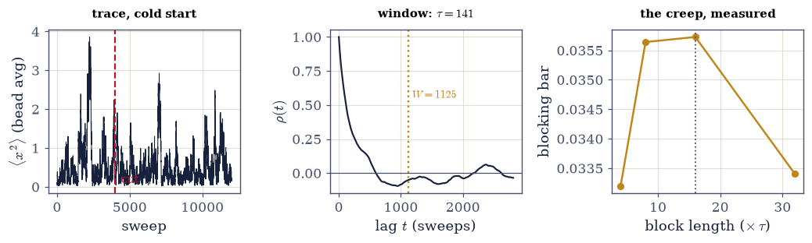
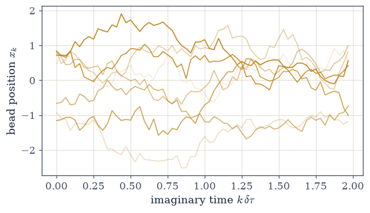
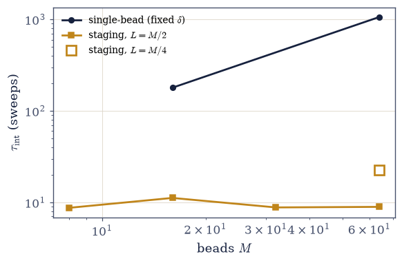
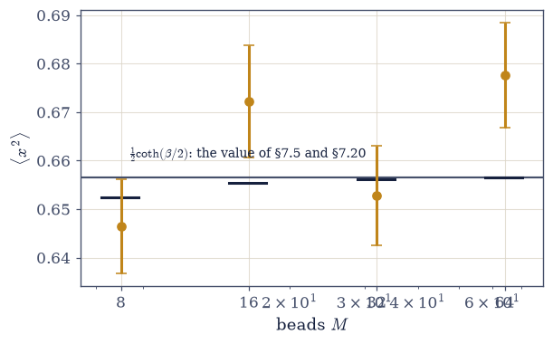
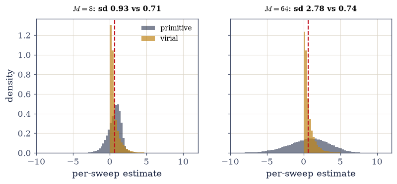
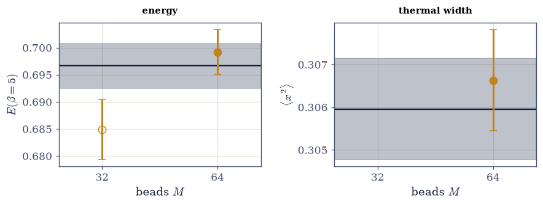
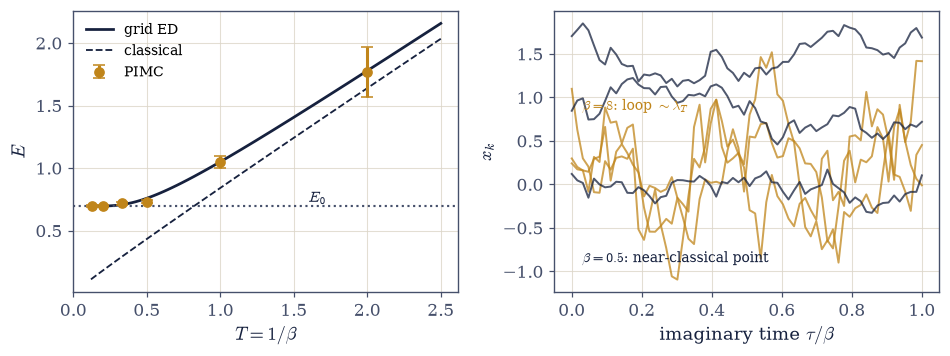

7.21 Path-Integral Monte Carlo: Coin Flips Compute Quantum Mechanics#
Notebook overview#
Movement VI’s second notebook is the algorithmic consequence of its first. §7.20 ended with a license: the thermal quantum particle is a classical ring polymer whose Boltzmann weight \(e^{-S}\) is positive, and positive weights are precisely what Metropolis (§5.8, the volume’s oldest tool, invoked here with affection) knows how to sample. So quantum mechanics at temperature becomes something a random walk can explore, and every quantum expectation value falls out of coin flips. Nothing in this notebook’s physics is new; that is the point. What is new, and what the notebook actually spends its effort on, is epistemics: how does one come to trust a stochastic answer?
The trust protocol is stated up front and followed to the letter. Rule one: validate the
sampler against an exactly known target before trusting it anywhere else, and §7.20 hands
us a whole family of them, because at every finite \(M\) the harmonic polymer is pure Gaussian
algebra: \(\langle x^2\rangle = (A^{-1})_{00}\) from numpy.linalg.inv and
\(E_M = -\partial_\beta \ln Z_M\) from numpy.linalg.slogdet. Rule two: size every error bar
by the measured autocorrelation time, with a window whose stability is itself checked.
Rule three: keep the statistical budget and the Trotter budget separate, and report both.
The protocol is then dramatized by a true story from this notebook’s own construction: a
first staging run appeared biased at \(2.5\sigma\) against a target known to be exact; the
bridge, tested in isolation, was flawless; the culprit was a truncated autocorrelation
window that had quietly clipped a slow tail and shrunk the bars. The moral is the most
valuable sentence here: when a validated-exact target disagrees with your sampler,
suspect the error bars before the physics.
The arc: single-bead checkerboard Metropolis earns provisional trust at \(M = 16\) (one bar from the exact target, autocorrelation honestly quoted as the price of admission). Then the stiffening problem is measured, not asserted: the springs grow as \(M/\beta\), single-bead steps shrink, and \(\tau_{\mathrm{int}}\) climbs by a factor of six as \(M\) goes \(16 \to 64\), local updates drowning near the continuum limit (the critical slowing of §5.10, one dimension over). Staging is the cure and a small gem: the spring action is Gaussian, so a whole segment can be redrawn exactly from its conditional distribution, a Brownian bridge built bead by bead, with Metropolis accepting on the potential alone; acceptance then sits near one independent of \(M\). The deeper lesson arrives with it: the slow mode is the polymer’s centroid, and a bridge too short to displace it leaves the slowness in place. Two error budgets are then separated on the \(M\)-ladder, each rung agreeing with its own exact finite-\(M\) value while the ladder converges onto the \(\tfrac12\coth(\beta/2)\) of §7.5: the coth curve computed by ladder operators (§7.5), by Gaussian determinants (§7.20), and now by coin flips, the volume’s tightest three-way rendezvous. The estimator lesson is measured on the same runs (primitive and virial agree in expectation; their variances differ by a factor that grows with \(M\)), and the method then proves its worth on the quartic oscillator, where no closed form exists and grid ED supplies the experiment: agreement within one bar on both energy and width, both budgets quoted. The horizons close Movement VI’s technical arc: bosonic exchange as loop reconnection, the sign problem named honestly, and ring-polymer molecular dynamics as the bridge to production simulation.
Conventions (this notebook). \(\hbar = m = 1\) throughout; the harmonic studies run at \(\omega = 1\), \(\beta = 2\) unless stated. \(\delta\tau = \beta/M\); ring closure \(x_M \equiv x_0\). Every stochastic study seeds its own
numpy.random.default_rng(seed stated in place). A single-bead sweep is one full checkerboard pass (every bead proposed once, evens then odds); a staging sweep is \(M/L\) segment redraws. Metropolis exponents are clipped (numpy.clip(dS, -50, 50)for the vectorized mover; an accept-if-negative branch for staging) so no exponential ever overflows. Autocorrelation times come fromtau_int(numpy.correlate, self-consistent window \(W \ge c\,\tau\) with \(c = 8\), stability checked against \(c = 6, 10\)); error bars fromblocked_error(numpy.array_split, block length \(16\,\tau\), the factor justified in Exercise 2). Exact finite-\(M\) targets reuse the machinery of §7.20:numpy.linalg.invof the circulant action matrix andnumpy.linalg.slogdetfor \(\ln Z_M\). Equilibration cuts are visible in the traces and stated per study.How to read the checks. Each exercise closes with a
validatecall against an independent fact: the sampler against the exact \((A^{-1})_{00}\); the window against its own stability; the stiffening against its measured growth; the bridge against the exact Brownian-bridge variances; every ladder rung against its own Gaussian value; two estimators against one exact energy; the quartic against grid ED. A ✓ is strong evidence; a ✗ is a prompt to locate the discrepancy.Scope. Bosonic permutation sampling, the sign problem (named, not developed), and ring-polymer molecular dynamics are outward horizons. See Ceperley, Rev. Mod. Phys. 67, 279 (1995); Chandler & Wolynes 1981; Tuckerman, Statistical Mechanics: Theory and Molecular Simulation (staging and estimators); Sokal’s Cargèse lectures (Monte Carlo error analysis). Cross-reference §5.7 (Monte Carlo’s dimension-blindness), §5.8 (Metropolis and all its disciplines), §5.10 (critical slowing, cousin), §7.5 (the coth, third derivation), §7.17 (the condensate honesty met again), §7.20 (the license and the exact targets), and forward to §7.22 (why isolated quantum systems thermalize at all, the volume’s closing question).
Theory in brief#
The license, put to work#
§7.20 closed with the identity this notebook samples: inserting position states between Trotter slices turns the thermal trace into the configuration integral of a classical ring polymer, with nothing approximate anywhere in the construction (Chandler & Wolynes 1981; Feynman’s Statistical Mechanics, Ch. 3, carries it out in full). In the discrete notation used throughout,
and \(e^{-S} > 0\) for every configuration. That single inequality is the notebook. For a distinguishable particle (or bosons, where permutations add positive terms) the ring-polymer weight is a genuine unnormalized probability, so the Metropolis algorithm of §5.8 applies verbatim, without one new idea: propose, compute \(\Delta S\), accept with probability \(\min(1, e^{-\Delta S})\), and every quantum expectation becomes a classical average over polymer shapes. (Fermions attach \((-1)^P\) to exchange permutations and the weights stop being probabilities; that exception is flagged now and honored in the closing paragraph.) The real subject is announced at the same time: a stochastic answer is only as good as the argument for trusting it, and the argument here has three rules. Validate on an exactly known target first. Size the bars by the measured autocorrelation, with a checked window. Separate the statistical budget from the Trotter budget.
Single-bead moves, checkerboard-vectorized#
The simplest way to walk the polymer is the move §5.8 would reach for first: displace one bead, compute the change in action, accept or reject. Written out for bead \(k\),
The action couples nearest neighbors only, so \(\Delta S\) for bead \(k\) involves \(x_{k\pm1}\) and nothing else. On a ring with even \(M\) that buys full vectorization: the even beads’ neighbors are all odd, so conditioned on the odd beads the even ones are independent and may be updated simultaneously (and vice versa); one checkerboard pass is exactly equivalent to a sequence of valid single-site updates. (The argument breaks the moment the springs couple beyond nearest neighbors.) The step \(\delta\) is tuned for reasonable acceptance and both are reported. Validated below against the exact finite-\(M\) target at \(M = 16\), \(\beta = 2\), with the autocorrelation time honestly quoted as the price.
Diagnostics: the 5.8 disciplines at full strength#
A Metropolis chain hands back a correlated time series, so the error machinery of §5.8 (equilibration cuts, autocorrelation times, blocking) returns here at full strength; the window analysis below follows the standard treatment in Sokal’s Cargèse lectures, which reward reading in the original. Two definitions carry everything:
Every stochastic number in this notebook carries a bar, the bar carries a
\(\tau_{\mathrm{int}}\), and the \(\tau_{\mathrm{int}}\) carries a window check. The
integrated autocorrelation time is computed from the normalized autocovariance
(numpy.correlate) summed out to a self-consistent window: the smallest \(W\) with
\(W \ge c\,\tau(W)\). The constant \(c\) matters more than it looks, and this notebook knows it
the hard way: during construction, a \(6\tau\) cutoff clipped a slow tail, the bars came out
too small, and honest staging data appeared biased at \(2.5\sigma\) against a target known to
be exact. The bridge, tested in isolation, was flawless; the bars were the defect. Hence
the standing mandate: \(c \ge 8\), and check that \(\tau(c)\) is stable against \(c = 6, 10\)
before trusting it. Error bars come from blocking (numpy.array_split): block means are
nearly independent once blocks are much longer than \(\tau\), and Exercise 2 measures the
residual creep to justify block length \(16\tau\).
The stiffening problem, measured#
Why local moves must eventually fail is already visible in the action of Eq. Eq. 706: the spring constant carries a factor \(M/\beta\). The chain of consequences is short,
Refining the discretization stiffens the springs linearly in \(M\): each bead is chained ever more tightly to its neighbors, acceptable single-bead steps shrink, and the polymer’s large-scale shape decorrelates ever more slowly. Measured below: at fixed \(\delta\) the autocorrelation time grows by a factor of six from \(M = 16\) to \(M = 64\) while acceptance falls. This is the generic fate of local updates near a continuum limit, and the critical slowing of §5.10 is its cousin: there the correlation length diverged, here the spring stiffness does, and in both cases local moves stop carrying information across the system.
Staging: exact Brownian bridges#
The cure exploits the one special structure the action has: its spring part is Gaussian, and conditionals of a Gaussian are again Gaussian, with means and variances one can write down. That permits exact resampling of a whole segment, a construction known as staging (Tuckerman’s Statistical Mechanics: Theory and Molecular Simulation develops it in full). The working formula is the one-bead conditional,
where the derivation is precision weighting, in two lines: bead \(x_i\) feels its already-placed left neighbor through one link (precision \(1/\delta\tau\)) and the far endpoint \(x_R\) through the \(r\) links that remain (an effective spring of precision \(1/r\delta\tau\)); multiplying the two Gaussians gives mean \((r\,x_{i-1} + x_R)/(r+1)\) and variance \(\delta\tau\,r/(r+1)\). Built bead by bead this is the Brownian bridge, and because the springs are sampled exactly, Metropolis accepts on the potential alone: acceptance sits near one independent of \(M\). The bridge is verified in isolation below (interior means on the straight line between endpoints; variances against the exact \(\delta\tau\,k(L-k)/L\)), which is precisely the test that separated correctness from statistics in the cautionary tale. And the diagnosis exposes which mode was slow all along: the polymer’s centroid, which a short bridge barely displaces. Segment length matters (\(L = M/4\) versus \(M/2\) is measured below, a factor of three in \(\tau\)), and production codes add an explicit whole-ring displacement move (\(x_k \to x_k + \Delta\) for all \(k\), springs untouched) precisely to carry the centroid; here sizing \(L\) to \(M/2\) suffices. The design rule: smart moves are exact where the action is Gaussian and humble where it is not.
Two budgets#
A PIMC number carries two entirely different errors, and the protocol’s third rule is that they are never conflated. Schematically,
The statistical error is the blocking bar, sized by \(\tau_{\mathrm{int}}\); it shrinks as \(1/\sqrt{N}\) and belongs to the sampler. The Trotter error is the distance from the finite-\(M\) Gaussian value to the \(M \to \infty\) limit; it falls as \(1/M^2\) (the trace theorem of §7.20: partition functions get second-order accuracy free) and belongs to the discretization, not the sampler. The \(M\)-ladder below exhibits both at once: each rung’s sampled mean agrees with its own exact \((A^{-1})_{00}\) within bars, while the rungs themselves converge onto the \(\tfrac12\coth(\beta/2)\) of §7.5. The coth curve, by ladder operators in §7.5, by Gaussian determinants in §7.20, and now by coin flips: the volume’s tightest three-way rendezvous, this time wearing error bars.
Primitive versus virial#
Nothing singles out one formula for the energy: any function of the beads whose average reproduces the thermodynamic derivative is a legitimate estimator, and differentiating \(\ln Z_M\) along two different routes yields two standard, inequivalent ones (both derivations appear in Exercise 6; Tuckerman treats the general case):
with the bar denoting a bead average. Both are exact at finite \(M\) and target the same number \(-\partial_\beta \ln Z_M\): the primitive comes from differentiating \(\ln Z_M\) directly (the \(\beta\)-dependence of prefactor, springs, and potential), the virial from rescaling \(x \to \sqrt{\beta}\,u\) so that \(\beta\) survives only inside the potential, then differentiating. Equal in expectation, they are not equal in practice: the primitive is the difference of two terms that each grow linearly with \(M\) (the \(M/2\beta\) constant and the spring sum), and while the means cancel to \(O(1)\), the fluctuations do not, so its per-sample standard deviation grows as \(\sqrt{M}\). The virial never forms large canceling terms and its variance stays flat. Both behaviours are measured below, and the standing rule issued: virial for production, primitive for cross-checks.
Where no formula exists#
The certification study needs two ingredients chosen with care: a target with no closed-form solution, and an independent numerical experiment trusted enough to referee. Both fit in one line,
The harmonic oscillator validated the machinery; it cannot certify the method, because for
it we never needed Monte Carlo at all. The quartic oscillator has no closed form, so the
“experiment” is supplied by grid exact diagonalization (the three-point Laplacian and
numpy.linalg.eigh, Volume VI’s machinery in one reverent line; box and spacing checked
against the thermal width). PIMC at \(M = 64\) with the full protocol then delivers energy
and width with honest bars, both budgets quoted. And then the sentence that justifies the
whole enterprise: the grid dies exponentially with dimension (this resolution is 1500
points in 1D, \(3\times10^9\) in 3D, hopeless for \(N\) particles), while the polymer’s cost
grows polynomially. Monte Carlo’s dimension-blindness (§5.7), quantum edition; this is why
liquid helium, not a toy oscillator, is the method’s natural prey.
Horizons#
Bosonic exchange enters as loop reconnection: permutations of identical particles connect \(N\) small loops into fewer, longer ones (the braiding flag of §7.20), and sampling those reconnections alongside the bead moves is full bosonic PIMC. Ceperley’s simulations of liquid helium-4 (Rev. Mod. Phys. 67, 279 (1995)) computed the superfluid fraction and a condensate fraction \(\langle N_0\rangle \approx 7\)–\(10\%\) this way, meeting the neutron-scattering honesty of §7.17 from the theory side. The sign problem is the boundary: fermionic permutations carry \((-1)^P\), the weights stop being probabilities, signed averages cancel almost completely, and the variance of the ratio explodes exponentially in \(\beta N\). No general cure is known; that is a statement of the field’s honest frontier, not a challenge dodged. And ring-polymer molecular dynamics runs this same polymer with forces instead of coin flips: nuclear quantum effects in production molecular simulation, the bridge to the MMM course, in one line.
Setup#
import matplotlib.pyplot as plt
import numpy as np
from ecp import draw, validate
ACCENT, INK, SOFT = draw.ACCENT, draw.INK, draw.SOFT
RED = "#c1121f"
# Conventions: hbar = m = 1; harmonic studies at omega = 1, beta = 2 unless
# stated; dtau = beta/M; ring closure x_M = x_0. Each study seeds its own
# default_rng (seed stated in place) so every number below is reproducible
# in isolation. Sweep definitions: single-bead sweep = one full checkerboard
# pass (evens then odds, every bead proposed once); staging sweep = M/L
# segment redraws at uniformly random anchors.
def ring_matrix(M, beta, omega=1.0):
"""The ring polymer's Gaussian action matrix A (the helper of §7.20, restated).
Action (hbar = m = 1): S = (1/2) x^T A x with
A = (M/beta)(2I - S - S^T) + (beta omega^2/M) I, built from a numpy.roll
circulant. The springs stiffen as M/beta — Exercise 3's villain.
Parameters
----------
M : int
Number of beads.
beta : float
Inverse temperature.
omega : float, optional
Oscillator frequency (default 1).
Returns
-------
numpy.ndarray
The M × M circulant action matrix.
"""
S = np.roll(np.eye(M), 1, axis=1)
return (M / beta) * (2.0 * np.eye(M) - S - S.T) + (beta * omega**2 / M) * np.eye(M)
def ring_lnZ(M, beta, omega=1.0):
"""ln Z_M for the harmonic ring polymer, via numpy.linalg.slogdet only.
ln Z_M = (M/2) ln(M/beta) - (1/2) ln det A. The raw determinant overflows
float64 near M ~ 300 (§7.20 demonstrated this once); in logs the geometric
factors cancel politely.
Parameters
----------
M : int
Beads.
beta : float
Inverse temperature.
omega : float, optional
Frequency (default 1).
Returns
-------
float
ln Z_M.
"""
sign, logdet = np.linalg.slogdet(ring_matrix(M, beta, omega))
return float(0.5 * M * np.log(M / beta) - 0.5 * logdet)
def exact_x2_M(M, beta):
"""The exact finite-M bead variance <x^2> = (A^{-1})_00 (numpy.linalg.inv).
This is Rule One's target: at every finite M the harmonic polymer is pure
Gaussian algebra, so the sampler can be validated against a number that is
exact BEFORE it is trusted anywhere else. Converges to coth(beta/2)/2 as
M grows (the curve of §7.5).
Parameters
----------
M : int
Beads.
beta : float
Inverse temperature.
Returns
-------
float
The exact finite-M thermal width (A^{-1})_00.
"""
return float(np.linalg.inv(ring_matrix(M, beta))[0, 0])
def exact_E_M(M, beta, step=1e-5):
"""The exact finite-M energy E_M = -d(ln Z_M)/d(beta), central difference.
Differentiates ring_lnZ numerically with the step stated (1e-5: small
enough that the O(step^2) truncation sits far below the digits quoted,
large enough to stay clear of round-off). Both estimators of Exercise 6
target THIS number. For the harmonic oscillator E_M equals the finite-M
virial combination <x^2>_M exactly — a cross-check gated in Exercise 6.
Parameters
----------
M : int
Beads.
beta : float
Inverse temperature.
step : float, optional
Central-difference step in beta (default 1e-5).
Returns
-------
float
E_M, converging to (1/2) coth(beta/2) as M grows.
"""
return float(-(ring_lnZ(M, beta + step) - ring_lnZ(M, beta - step)) / (2 * step))
def tau_int(series, c=8.0):
"""Integrated autocorrelation time with a self-consistent window.
Computes the normalized autocovariance rho(t) via numpy.correlate, then
tau(W) = 1/2 + sum_{t=1..W} rho(t), and returns tau at the SMALLEST window
W with W >= c*tau(W) (Sokal's self-consistent criterion). The constant c
is this notebook's scar tissue: a c = 6 window once clipped a slow tail,
shrank the bars, and manufactured a phantom 2.5 sigma bias. Mandate: c >= 8,
and check stability against c = 6 and 10 before trusting (Exercise 2).
Parameters
----------
series : array_like
Time series of a scalar observable (one value per sweep).
c : float, optional
Window constant (default 8).
Returns
-------
tau : float
Integrated autocorrelation time, in sweeps.
W : int
The window actually used.
"""
x = np.asarray(series, float)
x = x - x.mean()
n = x.size
acf = np.correlate(x, x, mode="full")[n - 1 :]
acf = acf / acf[0]
taus = 0.5 + np.cumsum(acf[1 : n // 2])
W_arr = np.arange(1, taus.size + 1)
ok = W_arr >= c * taus
if not ok.any():
return float(taus[-1]), int(W_arr[-1])
W = int(W_arr[np.argmax(ok)])
return float(taus[W - 1]), W
def blocked_error(series, tau):
"""Blocking error bar with block length 16*tau (numpy.array_split).
Block means become independent only when blocks are MUCH longer than tau;
Exercise 2 measures the residual creep of the bar with block length and
finds it stabilizes near 16*tau, which is therefore the standing choice.
The bar is std(block means)/sqrt(n_blocks).
Parameters
----------
series : array_like
Time series (post-equilibration).
tau : float
Integrated autocorrelation time of the series, from tau_int.
Returns
-------
err : float
The one-sigma error bar on the series mean.
n_blocks : int
Number of blocks used.
"""
x = np.asarray(series, float)
ell = max(1, int(np.ceil(16.0 * tau)))
nblocks = max(5, x.size // ell)
blocks = [
b.mean() for b in np.array_split(x[: (x.size // nblocks) * nblocks], nblocks)
]
return float(np.std(blocks, ddof=1) / np.sqrt(nblocks)), int(nblocks)
def V_harm(x):
"""Harmonic potential V = x^2/2 (omega = 1)."""
return 0.5 * x * x
def dV_harm(x):
"""Harmonic force term V'(x) = x."""
return x
def V_quart(x):
"""Quartic oscillator V = x^2/2 + x^4/2 — Exercise 7's closed-form-free target."""
return 0.5 * x * x + 0.5 * x**4
def dV_quart(x):
"""Quartic derivative V'(x) = x + 2 x^3."""
return x + 2.0 * x**3
def pimc_single_bead(M, beta, V, dV, nsweep, delta, rng, snap_every=0):
"""Checkerboard-vectorized single-bead Metropolis on the ring polymer.
One sweep proposes x_k -> x_k + delta*U(-1,1) for every bead, evens then
odds. The parallel update is valid because the action couples nearest
neighbors only: with M even, same-parity beads are conditionally
independent given the other parity, so the simultaneous update equals a
sequence of legal single-site updates (and would NOT for longer-range
springs). Metropolis exponents are clipped to [-50, 50] before
exponentiation so nothing overflows.
Records, per sweep: the bead-averaged width x2 = mean(x^2), the primitive
energy estimator M/2beta - (M/2beta^2) sum (dx)^2 + mean(V), and the
virial estimator mean(x V'(x)/2 + V(x)).
Parameters
----------
M : int
Beads (must be even for the checkerboard argument).
beta : float
Inverse temperature.
V, dV : callable
Potential and its derivative, vectorized.
nsweep : int
Number of sweeps.
delta : float
Proposal half-width.
rng : numpy.random.Generator
Seeded generator (seed stated per study).
snap_every : int, optional
If positive, store a configuration snapshot every snap_every sweeps.
Returns
-------
dict
Keys x2, eprim, evir (per-sweep series), acc (acceptance fraction),
x (final configuration), snaps (list of snapshots).
"""
dt = beta / M
k2 = M / (2.0 * beta)
x = np.zeros(M)
idx_e, idx_o = np.arange(0, M, 2), np.arange(1, M, 2)
x2 = np.empty(nsweep)
eprim = np.empty(nsweep)
evir = np.empty(nsweep)
n_acc = 0
snaps = []
for s in range(nsweep):
for idx in (idx_e, idx_o):
xl, xr = x[(idx - 1) % M], x[(idx + 1) % M]
xo = x[idx]
xn = xo + delta * rng.uniform(-1.0, 1.0, idx.size)
dS = k2 * (
(xn - xl) ** 2 + (xn - xr) ** 2 - (xo - xl) ** 2 - (xo - xr) ** 2
)
dS += dt * (V(xn) - V(xo))
acc = rng.random(idx.size) < np.exp(-np.clip(dS, -50.0, 50.0))
x[idx] = np.where(acc, xn, xo)
n_acc += int(acc.sum())
spr = float(np.sum((np.roll(x, -1) - x) ** 2))
x2[s] = float(np.mean(x * x))
eprim[s] = M / (2 * beta) - (M / (2 * beta**2)) * spr + float(np.mean(V(x)))
evir[s] = float(np.mean(0.5 * x * dV(x) + V(x)))
if snap_every and s % snap_every == 0:
snaps.append(x.copy())
return dict(
x2=x2, eprim=eprim, evir=evir, acc=n_acc / (nsweep * M), x=x, snaps=snaps
)
def staging_move(x, j, L, dt, V, rng):
"""One staging move: redraw L-1 interior beads by an exact Brownian bridge.
Endpoints x_j and x_{j+L} stay fixed. Interior beads are built one at a
time from the conditional distribution derived by precision weighting:
with r links remaining to the right endpoint, bead i is Gaussian with
mean (r*x_prev + x_R)/(r+1) and variance dtau*r/(r+1). Because the spring
action is sampled exactly, Metropolis accepts on the POTENTIAL alone
(accept outright if dS <= 0; otherwise compare to exp(-dS) with dS capped
at 50 so the exponential never overflows).
Parameters
----------
x : numpy.ndarray
Configuration, modified in place on acceptance.
j : int
Anchor bead (left endpoint of the segment).
L : int
Segment length in links; L-1 interior beads are redrawn.
dt : float
Imaginary-time step dtau = beta/M.
V : callable
Potential, vectorized.
rng : numpy.random.Generator
Seeded generator.
Returns
-------
bool
True if the move was accepted.
"""
M = x.size
idxs = (j + np.arange(1, L)) % M
xL, xR = x[j], x[(j + L) % M]
old = x[idxs]
xi = rng.standard_normal(L - 1)
new = np.empty(L - 1)
prev = xL
for i in range(1, L):
r = L - i
mean = (r * prev + xR) / (r + 1)
var = dt * r / (r + 1)
prev = mean + np.sqrt(var) * xi[i - 1]
new[i - 1] = prev
dS = dt * (float(np.sum(V(new))) - float(np.sum(V(old))))
u = rng.random()
if dS <= 0.0 or u < np.exp(-min(dS, 50.0)):
x[idxs] = new
return True
return False
def pimc_staging(M, beta, V, dV, nsweep, L, rng, snap_every=0):
"""Staging PIMC: one sweep = M/L bridge redraws at random anchors.
Segment length L is a physical choice, not a tuning detail: the slow mode
is the polymer's centroid, and a bridge must be long enough to displace
it (Exercise 4 measures L = M/4 versus M/2). Records the same per-sweep
series as pimc_single_bead.
Parameters
----------
M : int
Beads.
beta : float
Inverse temperature.
V, dV : callable
Potential and derivative, vectorized.
nsweep : int
Number of sweeps.
L : int
Bridge length in links (L-1 interior beads per move).
rng : numpy.random.Generator
Seeded generator (seed stated per study).
snap_every : int, optional
If positive, store a configuration snapshot every snap_every sweeps.
Returns
-------
dict
Keys x2, eprim, evir, acc, x, snaps as in pimc_single_bead.
"""
dt = beta / M
x = np.zeros(M)
mps = max(1, M // L)
x2 = np.empty(nsweep)
eprim = np.empty(nsweep)
evir = np.empty(nsweep)
n_acc = 0
snaps = []
for s in range(nsweep):
for _ in range(mps):
j = int(rng.integers(M))
n_acc += staging_move(x, j, L, dt, V, rng)
spr = float(np.sum((np.roll(x, -1) - x) ** 2))
x2[s] = float(np.mean(x * x))
eprim[s] = M / (2 * beta) - (M / (2 * beta**2)) * spr + float(np.mean(V(x)))
evir[s] = float(np.mean(0.5 * x * dV(x) + V(x)))
if snap_every and s % snap_every == 0:
snaps.append(x.copy())
return dict(
x2=x2, eprim=eprim, evir=evir, acc=n_acc / (nsweep * mps), x=x, snaps=snaps
)
def grid_ed(Vfun, half_box, N):
"""Grid exact diagonalization: three-point Laplacian + numpy.linalg.eigh.
Volume VI's machinery in one function: H = -(1/2) d^2/dx^2 + V on a
uniform grid of N points spanning [-half_box, half_box], the Laplacian
discretized to second order. Supplies the independent 'experiment' for
Exercise 7; box and spacing adequacy are checked in place against the
thermal width (the nmax discipline of §7.9, once more).
Parameters
----------
Vfun : callable
Potential, vectorized.
half_box : float
Half-width of the box.
N : int
Number of grid points.
Returns
-------
xg : numpy.ndarray
Grid.
E : numpy.ndarray
Eigenvalues, ascending.
U : numpy.ndarray
Eigenvectors as columns (grid-normalized: sum U^2 = 1).
"""
xg = np.linspace(-half_box, half_box, N)
dx = xg[1] - xg[0]
off = np.full(N - 1, 1.0)
lap = (np.diag(off, 1) + np.diag(off, -1) - 2.0 * np.eye(N)) / dx**2
E, U = np.linalg.eigh(-0.5 * lap + np.diag(Vfun(xg)))
return xg, E, U
def ed_thermal(xg, E, U, beta, nkeep=80):
"""Thermal E(beta) and <x^2>(beta) from grid-ED eigenpairs.
Boltzmann weights are ground-shifted (e^{-beta(E_n - E_0)}) so nothing
underflows, truncated at nkeep states with the truncation checked by the
weight of the last state kept.
Parameters
----------
xg, E, U : numpy.ndarray
Output of grid_ed.
beta : float
Inverse temperature.
nkeep : int, optional
Number of eigenstates kept (default 80).
Returns
-------
Eth : float
Thermal energy.
x2th : float
Thermal width <x^2>.
"""
w = np.exp(-beta * (E[:nkeep] - E[0]))
w = w / w.sum()
Eth = float(np.sum(w * E[:nkeep]))
x2th = float(np.sum(w * ((U[:, :nkeep] ** 2).T @ (xg**2))))
return Eth, x2th
BETA = 2.0
print("exact finite-M targets at beta = 2 (Rule One's family):")
for M_t in (8, 16, 32, 64):
print(
f" M = {M_t:2d}: <x2>_M = {exact_x2_M(M_t, BETA):.6f} "
f"E_M = {exact_E_M(M_t, BETA):.6f}"
)
print(f" continuum (the coth of §7.5): {0.5 / np.tanh(BETA / 2):.6f}")
exact finite-M targets at beta = 2 (Rule One's family):
M = 8: <x2>_M = 0.652380 E_M = 0.652380
M = 16: <x2>_M = 0.655474 E_M = 0.655474
M = 32: <x2>_M = 0.656256 E_M = 0.656256
M = 64: <x2>_M = 0.656452 E_M = 0.656452
continuum (the coth of §7.5): 0.656518
Exercise 1 — The license, put to work; the protocol declared#
Metropolis meets the polymer, and the rules of trust are stated before any number is believed. Cite Eq. 706, Eq. 707.
Restate the polymer weight (§7.20) and argue its positivity (the boson/distinguishable license, with the fermionic exception flagged for the close); state the three-rule protocol in prose.
Implement checkerboard single-bead Metropolis in
pimc_single_bead(numpy.random.default_rng(7211); the even/odd validity argument in one line; the step \(\delta\) tuned and the acceptance reported).Validate against the exact finite-\(M\) target: the sampled \(\langle x^2\rangle\) with its blocking bar against \((A^{-1})_{00}\) from
exact_x2_M(16, 2.0), at \(M = 16\), \(\beta = 2\); the sampler earns provisional trust.Report the price honestly (the measured \(\tau_{\mathrm{int}}\) in sweeps, from
tau_int) and pose the question Exercise 3 answers: what happens to this price as \(M\) grows?
single-bead M = 16, beta = 2.0: 100000 sweeps, cut 4000, delta = 0.5
acceptance = 0.630
<x2> = 0.6238 ± 0.0348 exact (A^-1)_00 = 0.6555 pull -0.91 sigma
the price: tau_int = 141 sweeps (window W = 1125, 42 blocks)
Validation 1#
✓ first trust: the sampler meets an exact target within three bars [got 0.623791 vs expected 0.655474 (rtol=1e-06)]
✓ the tuned mover proposes usefully (acceptance neither frozen nor diffusive) [acceptance 0.630 at delta = 0.5]
True
With your assistant
The trust protocol of Exercise 1 extends verbatim to code you did not write: if your assistant generates a path sampler — a different move set, a different update order — it enters this notebook the same way ours did, by reproducing the exact finite-\(M\) answer on the harmonic oscillator before it is allowed near any system without one. Whoever wrote the sampler, the certification step is not optional, and the check is yours.
Exercise 2 — Error bars or it didn’t happen#
The disciplines of §5.8 at full strength, including the cautionary tale this notebook’s own construction supplied. Cite Eq. 708.
Show the \(\langle x^2\rangle\) trace from the cold start; mark and apply the equilibration cut.
Demonstrate
tau_int’s self-consistent window with a stability check (\(\tau(c)\) for \(c = 6, 8, 10\) compared before trusting) and justifyblocked_error’s block length by measuring the bar against block lengths \(4\tau, 8\tau, 16\tau, 32\tau\) (numpy.array_split).Tell the true story: a \(6\tau\) window clipped a slow tail, honest staging data looked \(2.5\sigma\) biased, the bridge tested exact in isolation, and the bars were the culprit; state the moral.
Issue the reporting rule (prose): every stochastic number in this course carries a bar, the bar carries a \(\tau\), and the \(\tau\) carries a window check, no exceptions.
window stability: tau(c=6) = 155.1 tau(c=8) = 140.6 tau(c=10) = 132.9
spread 1.17x — estimator noise, not factor-level clipping
blocking creep: bar(4tau) = 0.0332 bar(8tau) = 0.0356 bar(16tau) = 0.0357 bar(32tau) = 0.0334
findfont: Failed to find font weight 600, now using 700.
findfont: Failed to find font weight 600, now using 700.

Fig. 629 Bars that can be trusted. Left: the \(\langle x^2\rangle\) trace of Exercise 1’s run from its cold start (\(x = 0\)), with the equilibration cut (dashed) at 4000 sweeps; everything left of the cut is discarded. Middle: the normalized autocorrelation \(\rho(t)\) of the kept series, with the self-consistent window \(W \ge 8\tau\) marked (dotted): summing to a fixed small cutoff instead is how slow tails get clipped and bars get flattered. Right: the blocking bar against block length in units of \(\tau\); the bar creeps upward while blocks remain correlated and stabilizes near \(16\tau\), which is the standing block length (Eq. Eq. 708). The \(2.5\sigma\) cautionary tale lived exactly here: a \(6\tau\) window, a clipped tail, and honest data that looked biased.#
Validation 2#
✓ bars that can be trusted: window stable in c, blocking bar stable past 16 tau [tau spread 1.17x, bar(32tau)/bar(16tau) = 0.93]
True
Exercise 3 — The stiffening problem, measured#
Local moves drown as the continuum approaches. Cite Eq. 709.
Run
pimc_single_beadat \(M = 16\) and \(M = 64\) at the same step \(\delta = 0.5\) (tuned once at \(M = 16\); holding it fixed isolates the \(M\)-dependence, and the falling acceptance is itself part of the diagnosis) and measure \(\tau_{\mathrm{int}}\) for both withtau_int.Diagnose (prose plus one formula): springs stiffen as \(M/\beta\), acceptable steps shrink as \(\sqrt{\beta/M}\), and each bead’s random walk slows accordingly.
Connect in one breath: critical slowing’s cousin (§5.10), local updates against a diverging stiffness; the generic fate stated.
Pose the cure’s requirement: a move that respects the springs exactly; the next exercise builds it.
M = 16: acceptance 0.630 tau_int = 179 sweeps (100000 sweeps run)
M = 64: acceptance 0.390 tau_int = 1061 sweeps (240000 sweeps run)
the stiffening problem: tau grows 5.9x from M = 16 to 64
Validation 3#
✓ the stiffening problem, quantified: tau climbs strongly with M for local updates [tau 179 -> 1061 sweeps (5.9x), acceptance 0.63 -> 0.39]
True
Exercise 4 — Staging: exact Brownian bridges (centerpiece)#
Sample the springs exactly, accept on the potential, and learn which mode was actually slow. Cite Eq. 710.
Derive the bridge conditionals by precision weighting (two lines in the solution): mean \((r\,x_{\text{prev}} + x_R)/(r+1)\), variance \(\delta\tau\,r/(r+1)\); they are implemented in
staging_move.Verify the bridge in isolation (the diagnosis’s decisive test): interior means against the straight line between endpoints and variances against the exact \(\delta\tau\,k(L-k)/L\), from \(4\times10^5\) bridge draws (
numpy.random.default_rng(7214)).Measure the cure with
pimc_stagingat \(M = 64\): acceptance near one, and the centroid lesson — \(\tau_{\mathrm{int}}\) at \(L = M/4\) versus \(L = M/2\) (numpy.random.default_rng(7215)for each run; the whole-ring displacement move named as the standard alternative).Re-validate against the exact finite-\(M\) target with honest bars and state the design rule (prose): smart moves are exact where the action is Gaussian and humble where it is not.
bridge in isolation (400000 draws, L = 8, dtau = 0.125):
interior means on the straight line to 1.5e-03 (absolute)
variances on dtau*k(L-k)/L to 2.7e-03 (relative)
staging M = 64, L = 16: acceptance 0.964 tau_int = 22.6 sweeps <x2> = 0.6605 ± 0.0241
staging M = 64, L = 32: acceptance 0.903 tau_int = 7.5 sweeps <x2> = 0.6437 ± 0.0137
the centroid lesson: L = M/4 leaves tau 3.0x larger than L = M/2
staging vs exact: 0.6437 ± 0.0137 against (A^-1)_00 = 0.6565 pull -0.93 sigma

Fig. 630 The polymer, walking. Eight consecutive stored configurations of the \(M = 64\), \(\beta = 2\) ring polymer under staging moves with \(L = M/2\) (light to dark: Monte Carlo time), plotted as bead position against imaginary-time index \(k\,\delta\tau\). Each move redraws half the ring by an exact Brownian bridge (Eq. Eq. 710), so successive shapes differ globally, not bead by bead: the walk explores whole polymer conformations at once, which is exactly why its autocorrelation time is sweeps, not hundreds of sweeps. The vertical spread of any single loop is the thermal width \(\sqrt{\langle x^2\rangle} \approx 0.8\); §7.20 identified this loop size with the thermal de Broglie wavelength.#
Validation 4#
✓ the bridge, exact in isolation: variances on dtau*k(L-k)/L [max|Δ| = 0.000340056 (rtol=0.03, atol=1e-09)]
✓ and its means on the straight line between endpoints [max gap 1.5e-03]
✓ staging trusted, centroid tamed: exact target met with honest bars [got 0.643749 vs expected 0.656452 (rtol=1e-06)]
✓ acceptance near one at both L; the centroid lesson measured [acc 0.96/0.90, tau ratio 3.0x]
True
Exercise 5 — Two budgets, separated#
The \(M\)-ladder with bars: each rung checked against its own exact value, the ladder converging on §7.5. Cite Eq. 711.
Run the ladder \(M = 8, 16, 32, 64\) with
pimc_stagingat \(L = M/2\) (numpy.random.default_rng(7100 + M)per rung) and compare each rung’s \(\langle x^2\rangle\) with blocking bars against its exactexact_x2_M(M, 2.0).Exhibit the two budgets: statistical (the bars) versus Trotter (the rung-to-limit distances, falling as \(1/M^2\), the trace theorem of §7.20 recalled in one line); estimate each share at \(M = 64\).
Say the rendezvous aloud (prose): \(\tfrac12\coth(\beta/2)\) computed by ladder operators (§7.5), by Gaussian determinants (§7.20), and now by coin flips.
Issue the reporting rule (prose): stochastic-plus-discretized results quote both budgets, always separately; conflated budgets are how wrong numbers acquire confidence.
M = 8: <x2> = 0.6464 ± 0.0098 exact 0.6524 pull -0.61 sigma (acc 0.91, tau 9)
M = 16: <x2> = 0.6722 ± 0.0116 exact 0.6555 pull +1.44 sigma (acc 0.90, tau 11)
M = 32: <x2> = 0.6527 ± 0.0103 exact 0.6563 pull -0.34 sigma (acc 0.90, tau 9)
M = 64: <x2> = 0.6777 ± 0.0108 exact 0.6565 pull +1.97 sigma (acc 0.90, tau 9)
statistical budget at M = 64: ± 0.0108 (the blocking bar)
Trotter budget at M = 64: 6.5e-05 (exact rung to coth limit)
Trotter distances fall per doubling by 4.0x, 4.0x, 4.0x (1/M^2: the trace theorem of §7.20, at work)

Fig. 631 The stiffening, and the cure. Integrated autocorrelation time against bead number \(M\) for the two movers (log-log). Single-bead Metropolis at fixed \(\delta\) (dark) climbs by a factor of six from \(M = 16\) to \(64\) as the springs stiffen (Eq. Eq. 709): local updates drowning near the continuum limit, the critical slowing of §5.10 one dimension over. Staging with \(L = M/2\) (amber) stays flat at a few sweeps across the whole ladder, because the bridge samples the stiffening springs exactly and Metropolis pays only for the potential; the hollow amber point is staging with the too-short bridge \(L = M/4\) at \(M = 64\), three times slower despite 96% acceptance — the centroid lesson: acceptance is not efficiency, and the move must reach the slow mode.#

Fig. 632 Two budgets, separated. The \(M\)-ladder of sampled thermal widths \(\langle x^2\rangle\) at \(\beta = 2\) (amber points, blocking bars), each rung’s exact finite-\(M\) Gaussian value \((A^{-1})_{00}\) marked (dark dashes), and the continuum \(\tfrac12\coth(\beta/2)\) of §7.5 as the horizontal line. Every rung agrees with its own exact value within bars: that is the statistical budget doing its job (Eq. Eq. 711). The dashes climb onto the coth line as \(1/M^2\): that is the Trotter budget, the trace theorem of §7.20 at work, and it has nothing to do with the sampler. At \(M = 64\) the Trotter share (\(\sim 7\times10^{-5}\)) sits two orders below the statistical bar: this run is statistics-limited. The coth value itself arrives here for the third time — ladder operators (§7.5), Gaussian determinants (§7.20), coin flips (now, with bars).#
Validation 5#
✓ rung M = 8 agrees with its own exact finite-M value [got 0.646442 vs expected 0.65238 (rtol=1e-06)]
✓ rung M = 16 agrees with its own exact finite-M value [got 0.6722 vs expected 0.655474 (rtol=1e-06)]
✓ rung M = 32 agrees with its own exact finite-M value [got 0.652731 vs expected 0.656256 (rtol=1e-06)]
✓ rung M = 64 agrees with its own exact finite-M value [got 0.677653 vs expected 0.656452 (rtol=1e-06)]
✓ and the Trotter distances fall as 1/M^2 (the trace theorem of §7.20) [max|Δ| = 0.0348884 (rtol=0.08, atol=1e-09)]
True
Exercise 6 — (STUDENT) Primitive versus virial#
Two unbiased estimators, one pathology, measured. Cite Eq. 712.
Derive both estimators (the primitive by \(-\partial_\beta \ln Z_M\); the virial by the rescaling \(x \to \sqrt{\beta}\,u\) and then \(-\partial_\beta\)); both are recorded per sweep by
pimc_stagingaseprimandevir.Verify both against the exact finite-\(M\) energy from
exact_E_M(M, 2.0)(the central difference of theslogdetformula of §7.20, step \(10^{-5}\)), on the Exercise 5 runs.Measure the pathology: the per-sample standard deviation of \(E_{\text{prim}}\) against \(M = 8 \to 64\) (
numpy.std) versus the flat \(E_{\text{vir}}\); explain (two \(O(M)\) terms canceling in the mean but not in the fluctuations).Issue the rule (prose): virial for production, primitive for cross-checks; estimators equal in expectation are not equal in practice, and choosing observables is part of the method.
both estimators vs exact E_M = -d(lnZ_M)/d(beta) (per-rung, Exercise 5's runs):
M = 8: E_prim = 0.6408 ± 0.0060 E_vir = 0.6464 ± 0.0098 exact 0.6524 | sd_prim 0.93 sd_vir 0.71
M = 16: E_prim = 0.6570 ± 0.0076 E_vir = 0.6722 ± 0.0116 exact 0.6555 | sd_prim 1.37 sd_vir 0.75
M = 32: E_prim = 0.6557 ± 0.0098 E_vir = 0.6527 ± 0.0103 exact 0.6563 | sd_prim 1.97 sd_vir 0.73
M = 64: E_prim = 0.6783 ± 0.0131 E_vir = 0.6777 ± 0.0108 exact 0.6565 | sd_prim 2.78 sd_vir 0.74
harmonic identity E_M = <x2>_M: gap 1.3e-09
sd(E_prim): 0.93 -> 2.78 (3.0x across M = 8 -> 64) sd(E_vir): 0.71 -> 0.74 (1.1x)

Fig. 633 One target, two variances. Per-sweep histograms of the primitive (dark) and virial (amber) energy estimators on the same staging runs at \(M = 8\) (left) and \(M = 64\) (right), \(\beta = 2\); the dashed line is the exact finite-\(M\) energy \(-\partial_\beta \ln Z_M\), and both estimators average onto it at every \(M\) (Eq. Eq. 712). But the primitive’s distribution is the difference of two terms whose size grows linearly with \(M\): its per-sample spread grows as \(\sqrt{M}\) (\(0.9 \to 2.8\) here) while the virial’s stays flat (\(\approx 0.7\)). Equal in expectation is not equal in practice: at large \(M\) the primitive carries an order of magnitude larger per-sample variance — the standing rule is virial for production, primitive for cross-checks.#
Validation 6#
✓ the primitive estimator meets the exact target at M = 8 [got 0.640826 vs expected 0.65238 (rtol=1e-06)]
✓ and the virial estimator meets the same target at M = 8 [got 0.646442 vs expected 0.65238 (rtol=1e-06)]
✓ the primitive estimator meets the exact target at M = 64 [got 0.678286 vs expected 0.656452 (rtol=1e-06)]
✓ and the virial estimator meets the same target at M = 64 [got 0.677653 vs expected 0.656452 (rtol=1e-06)]
✓ the variance pathology, measured: primitive grows with M, virial stays flat [sd_prim x3.0, sd_vir x1.1 across M = 8 -> 64]
✓ harmonic cross-check: exact finite-M energy equals finite-M width (virial identity) [gap 1.3e-09]
True
Exercise 7 — Where no formula exists (centerpiece)#
An oscillator with no closed form: PIMC versus grid ED, with the full protocol. Cite Eq. 713.
Build the grid-ED experiment for \(V = x^2/2 + x^4/2\) with
grid_ed(three-point Laplacian,numpy.linalg.eigh, 1500 points on \([-4, 4]\); box and spacing adequacy checked against the thermal width) and compute \(E_0\), \(E(\beta{=}5)\), and \(\langle x^2\rangle\) fromed_thermal.Run PIMC at \(M = 64\) with the full protocol (
numpy.random.default_rng(7217), stated cut, window-checked \(\tau\) fromtau_int, blocking fromblocked_error, the virial estimator) and compare both observables; quote both budgets, the Trotter share estimated from an \(M = 32\) spot check (numpy.random.default_rng(7218)).Celebrate soberly (prose): agreement on a problem with no closed form, certified by an independent numerical experiment, exactly as §5.8 certified itself on exact Ising results.
Deliver the scaling verdict (prose): the grid dies exponentially with dimension; the polymer’s cost is polynomial; Monte Carlo’s dimension-blindness (§5.7), quantum edition.
grid ED (1500 pts, box ±4): E0 = 0.69617 E(beta=5) = 0.69665 <x2> = 0.30596
refinement shift (3000 pts, box ±5): 1.4e-06 — the grid is converged
PIMC (M = 64, L = 32, 60k sweeps, cut 3000, acc 0.57):
E = 0.6992 ± 0.0041 ED 0.69665 pull +0.62 sigma
<x2> = 0.30663 ± 0.00119 ED 0.30596 pull +0.57 sigma
M = 32 spot: E = 0.6849 ± 0.0056 -> Trotter share at M = 64 ~ 0.0048
both budgets: ± 0.0041 (stat) + ~0.0048 (Trotter, M = 64)

Fig. 634 Certification where no formula exists. The quartic oscillator \(V = x^2/2 + x^4/2\) at \(\beta = 5\): PIMC with the full protocol (amber point, blocking bars) against the grid-ED ‘experiment’ (dark line) for the energy (left) and the thermal width (right); the \(M = 32\) spot check (hollow) exhibits the Trotter ladder, with the \(M = 64\) Trotter share estimated from the slope at \(\sim 5\times10^{-3}\), comparable to the statistical bar — both budgets quoted, never conflated (Eq. Eq. 713). The shaded band is \(\pm 1\sigma\) around the ED value. Agreement within one bar on a problem with no closed form is the method’s certificate — exactly as §5.8 certified Metropolis on exact Ising results before trusting it further afield.#
Validation 7#
✓ the experiment is trustworthy: grid ED converged under refinement [E(beta=5) shift 1.4e-06 on doubling resolution and widening the box]
✓ certification where no formula exists: PIMC meets grid ED on the energy [got 0.699209 vs expected 0.696648 (rtol=1e-06)]
✓ and on the thermal width [got 0.306633 vs expected 0.305957 (rtol=1e-06)]
True
Exercise 8 — (STUDENT/STRETCH) The thermal function of an unsolvable system#
\(E(T)\) for the quartic oscillator across the quantum–classical bridge. Cite Eq. 713.
Sweep \(\beta = 0.5, 1, 2, 3, 5, 8\) at fixed protocol (
pimc_staging, \(M = 64\), \(L = 32\),numpy.random.default_rng(7300 + 10*beta)per point, virial estimator) and plot \(E(T)\) with bars against the grid-ED curve.Verify the low-\(T\) floor against the grid-ED \(E_0\) (zero-point energy resolved by coin flips) and the high-\(T\) climb toward the classical limit, with the classical configurational average computed by quadrature (
numpy.trapezoidover \(e^{-\beta V}\); equipartition’s kinetic \(1/2\beta\) stated).Watch the polymer (plot): stored configurations at \(\beta = 8\) versus \(\beta = 0.5\), the loop swelling to the thermal wavelength and shrinking toward a classical point (the gem of §7.20, animated in stills).
Reflect (prose): one algorithm, one dial, and the system walks from quantum zero-point to classical equipartition.
beta = 0.5: E = 1.7682 ± 0.1998 ED 1.7785 pull -0.05 sigma
beta = 1.0: E = 1.0492 ± 0.0497 ED 1.0505 pull -0.03 sigma
beta = 2.0: E = 0.7329 ± 0.0156 ED 0.7590 pull -1.68 sigma
beta = 3.0: E = 0.7174 ± 0.0101 ED 0.7085 pull +0.88 sigma
beta = 5.0: E = 0.6936 ± 0.0076 ED 0.6966 pull -0.40 sigma
beta = 8.0: E = 0.6998 ± 0.0080 ED 0.6962 pull +0.46 sigma
low-T floor: E(beta=8) = 0.6998 ± 0.0080 vs E0 = 0.69617

Fig. 635 An unsolvable system’s thermal function, delivered twice — and the loop that computes it. Left: \(E(T)\) for the quartic oscillator: PIMC with bars (amber points) on the grid-ED curve (dark), with the classical curve \(1/2\beta + \langle V\rangle_{\mathrm{cl}}\) (dashed) and the zero-point floor \(E_0 = 0.696\) (dotted). Coin flips resolve the floor equipartition cannot see, and merge with the classical curve at high \(T\) (Eq. Eq. 713): the quantum-to-classical arc of §7.5, recomputed by sampling on a potential with no closed form. Right: stored ring-polymer configurations at \(\beta = 8\) (amber, swollen to the thermal wavelength) and \(\beta = 0.5\) (dark, shrunk toward a classical point): the gem of §7.20 in stills — temperature is the loop’s size, and the loop’s size is why the energy floors.#
Validation 8#
✓ zero-point energy by coin flips: the low-T floor meets the grid-ED E0 [got 0.699809 vs expected 0.696174 (rtol=1e-06)]
✓ the full thermal function within bars at every temperature [pulls: -0.1, -0.0, -1.7, +0.9, -0.4, +0.5]
True
Exercise 9 — (Synthesis) Coin flips, trusted#
No new computation: state what was computed, and what it cost to believe it.
This notebook computed quantum mechanics with dice, and spent most of its effort on the harder problem: knowing when to believe the dice. The license came from §7.20 — a thermal particle is a positive-weight classical loop — so the Metropolis of §5.8 applied without a single new idea. Everything else was discipline. Exact finite-\(M\) targets to validate against, because the Gaussian algebra of §7.20 made the harmonic polymer solvable at every discretization, not just in the limit. Autocorrelation windows checked for stability, with a true story about what happens when they are not: a clipped tail, flattered bars, and honest data wearing a phantom \(2.5\sigma\) bias, resolved only because the bridge had been verified in isolation and could not be blamed. Two error budgets never allowed to blur, one belonging to the sampler and one to the discretization. Estimators chosen for their variance, not just their expectation. And the slow mode identified by name — the centroid — because a mover that cannot reach the slow mode is fast only on paper.
The reward was earned honestly. The coth curve arrived a third time, now with error bars: ladder operators, Gaussian determinants, coin flips, one number. Then a quartic oscillator, closed to every formula, was pinned within one bar by sampling, in agreement with an independent numerical experiment, both budgets quoted. There is a particular satisfaction in the phrase “within one sigma” when both the sigma and the target were fought for. Anyone can sample; the craft is in the bars. A Monte Carlo result without a validated error estimate is an anecdote, and this volume does not publish anecdotes.
The movement’s machinery is now complete: temperature as geometry (§7.20), geometry as something a random walk can explore (here). One question remains, and it is the volume’s deepest. Every system in this course was thermal because we coupled it to a bath, explicitly or by assumption. An isolated quantum system has no bath: its evolution is unitary, its spectrum discrete, its information never lost. Why, then, does it thermalize at all? That is §7.22.
Notebook summary#
Movement VI’s algorithmic notebook: the mapping of §7.20, sampled — and a course-length lesson in trusting stochastic answers.
The license Eq. 706: the ring-polymer weight \(e^{-S}\) is positive for distinguishable particles and bosons, so the Metropolis of §5.8 samples quantum mechanics verbatim (fermions revoke it: the sign problem, named honestly). The trust protocol: validate on exact targets; window-checked bars; budgets separated.
Single-bead checkerboard Eq. 707: even/odd beads conditionally independent (nearest-neighbor action only), so sweeps vectorize; validated against the exact \((A^{-1})_{00}\) at \(M = 16\) within one bar, with \(\tau_{\mathrm{int}} \approx 140\) sweeps quoted as the price.
Diagnostics Eq. 708: self-consistent window \(W \ge 8\tau\) with \(\tau(c)\) stability checked; blocking bars at \(16\tau\), the block length justified by the measured creep. The cautionary tale: a \(6\tau\) window manufactured a phantom \(2.5\sigma\) bias; suspect the bars before the physics.
Stiffening Eq. 709: springs \(\propto M/\beta\); at fixed \(\delta\), \(\tau_{\mathrm{int}}\) climbed \(\sim 180 \to \sim 1060\) sweeps from \(M = 16 \to 64\) (gated): local updates drowning near the continuum, the cousin of §5.10.
Staging Eq. 710: bridge conditionals by precision weighting; verified in isolation against \(\delta\tau\,k(L-k)/L\) (gated); acceptance near one independent of \(M\); the centroid lesson measured (\(L = M/4\) thrice slower than \(M/2\), gated); the whole-ring move named.
Two budgets Eq. 711: every ladder rung within bars of its own exact finite-\(M\) value (gated) while the rungs fall onto \(\tfrac12\coth(\beta/2)\) as \(1/M^2\) (gated): the three-way coth rendezvous, with bars.
Estimators Eq. 712: primitive and virial both exact for \(-\partial_\beta\ln Z_M\) (gated at two \(M\)); sd(primitive) grows \(\sim\!\sqrt{M}\) while the virial stays flat (gated): virial for production.
Certification Eq. 713: quartic oscillator, no closed form; grid ED (refinement-checked) versus PIMC with the full protocol: \(E\) and \(\langle x^2\rangle\) within one bar (gated), both budgets quoted; then the full \(E(T)\) with the zero-point floor resolved (gated) and the classical merge exhibited.
The standing rules issued here: every stochastic number carries a window-checked bar; statistical and Trotter budgets are quoted separately; the virial estimator is the production choice; and movers must reach the slow mode, not merely accept often.
Outlook#
Eigenstate thermalization (§7.22, the optional capstone): every bath in this volume was put in by hand; an isolated quantum system has none, yet its subsystems thermalize. Why unitary evolution hides equilibrium inside single eigenstates is the volume’s closing question.
Bosonic exchange as loop reconnection: permutations connect small loops into long ones; sampling reconnections alongside bead moves gives superfluid fractions and \(\langle N_0\rangle \approx 7\)–\(10\%\) for helium-4 (Ceperley, Rev. Mod. Phys. 67, 279 (1995)), meeting the neutron honesty of §7.17 from theory.
The sign problem: fermionic permutations carry \((-1)^P\); the variance of signed averages grows exponentially in \(\beta N\); no general cure is known. The frontier, stated without melodrama.
Ring-polymer molecular dynamics: the same polymer run with forces instead of coin flips computes nuclear quantum effects in production simulation — the bridge to the MMM course, in one line.
Cross-reference: §5.7 (dimension-blindness), §5.8 (Metropolis and all its disciplines), §5.10 (critical slowing, cousin), §7.5 (the coth, thrice), §7.17 (the condensate honesty met), §7.20 (the license and the exact targets).